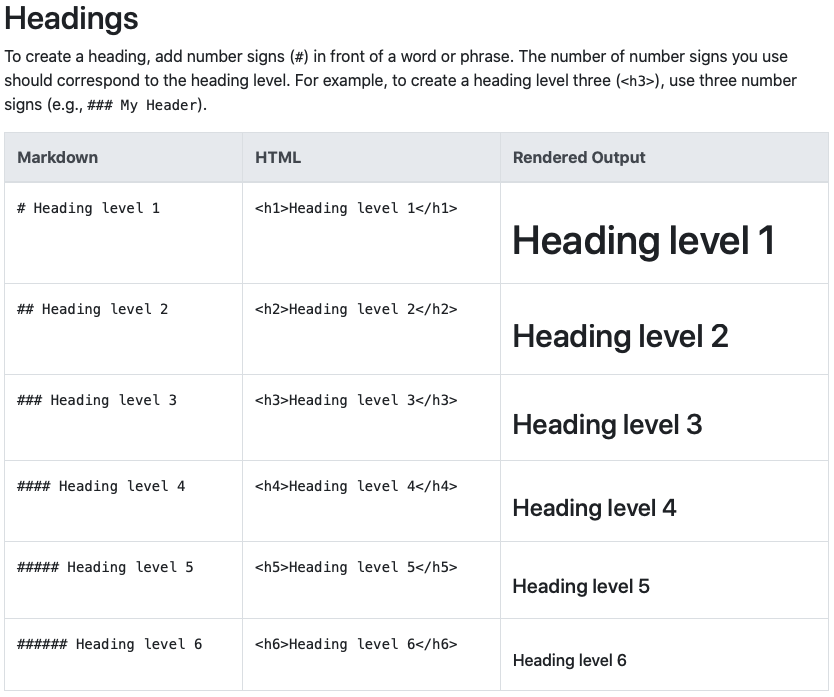
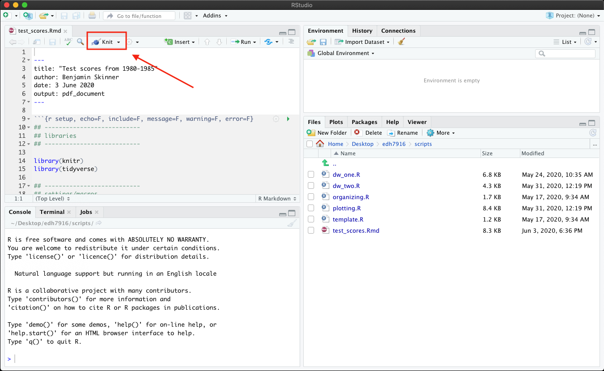

summary(cars) speed dist
Min. : 4.0 Min. : 2.00
1st Qu.:12.0 1st Qu.: 26.00
Median :15.0 Median : 36.00
Mean :15.4 Mean : 42.98
3rd Qu.:19.0 3rd Qu.: 56.00
Max. :25.0 Max. :120.00 In addition to using R in this course, you will also learn to use Markdown, a plain text markup language created by John Gruber in 2004. If you’re thinking, no, not another language — rest assured that Markdown is very easy to learn and use. In fact, it’s possible you’ve already used Markdown (or a version of it) if you’ve ever used Slack or a lightweight writing tool like iAWriter.
Most people who do any writing on a computer are familiar with MS Word. Even people who don’t use MS Word likely write with a MS Word-like program. Since we’re all on the same page, why introduce a new way to write — why Markdown?
The primary reason to bother is that Markdown files are easier to share and better support replicability in a quantitative research workflow. Understanding why this it the case requires first understanding the difference in how each of these writing tools handles a document’s content and formatting.
WYSIWYG (pronounced how you might guess - “whizzy-whig”) stands for what you see is what you get. MS Word and similar programs are WYSIWYG writing tools. Want some text bolded? You highlight the text, click on the bold text button (or hit Control/Command-B) and the text becomes bold. Want 1.05” margins to increase the page count (teachers always know, by the way…), then you adjust the margins and watch the text squeeze a little and the page count increase.
The point is that as you write, you control the content and how it’s formatted at the same time. This is really powerful. You can see your document (literally) taking shape and when you’re done writing, you’re mostly done formatting, too.
But one problem from a research perspective is that WYSIWYG document preparation programs don’t always share well, meaning that the formatting isn’t always preserved across computers or operating systems. Sometimes equations don’t open correctly; the font you selected doesn’t exist on another computer. While programs may be able to open each other’s files (e.g. OpenOffice can open a .docx file), that’s not always the case. They open different-program files with many errors or even not at all.
The second problem is they don’t work well with reproducible workflows. Let’s say you’ve done some data analysis and make 10 tables and 10 figures. You’ve carefully placed and formatted in your MS Word report. Perfect! But before giving to your supervisor or submitting to a journal, you get some new data and need to rerun everything…ah! You’ll have to go through the whole transfer and formatting process again, increasing the likelihood of introducing errors.
WYSIWIM (“whizzy-whim”), on the other hand, separates formatting from content. Rather than making bold text bold, you instead add a bit of markup — some special syntax — to the text you want to be bold. Only when the document is finally compiled into the final form will the text be bold.
Markdown syntax uses plain text characters to indicate formatting. This lesson was written in Markdown, so to show you an example, here’s the prior paragraph, in plain Markdown syntax:
_WYSIWIM_ ("whizzy-whim"), on the other hand, separates formatting
from content. Rather than making bold text bold, you instead add a bit
of markup --- some special syntax --- to the text you want to be
bold. Only when the document is finally _compiled_ into the final
form will the **text be bold**. Markdown solves the two problems noted above. First, it’s written in plain text, which means that it can be opened on any computer running any operating system. Even if the end user doesn’t have a way to compile the raw Markdown syntax into the nice-looking final form, the text is still very legible. In fact, this feature — ability to read uncompiled — was a motivating force behind the development of Markdown:
The idea is that a Markdown-formatted document should be publishable as-is, as plain text, without looking like it’s been marked up with tags or formatting instructions. (John Gruber, Markdown website)
Second, because it’s plain text, it integrates well with scripting languages like R. Remember our example from before? If your final report was in Markdown instead of MS Word, you could rerun your analyses with the updated data and then recompile your final report — tables and figures updated automatically!
In fact, R and Markdown work so well together that you can combine them in a single — appropriately named — RMarkdown document that takes a combined file ending:
analysis.Rwrite_up.mdreport.Rmdor
analysis.R + write_up.md = report.Rmd
We’ll keep our R and Markdown scripts separate at first, but know that you’ll submit an RMarkdown file for your final project.
Rather than list Markdown syntax here, I’ll direct you to an excellent resource: The Markdown Guide. On this site, you find example of both basic syntax (headers, italics, bold, links) and more advanced syntax (tables and footnotes).
Here’s an example from the Markdown Guide basic syntax page for making headers:

On the left you have the Markdown syntax. To make a header, just put a pound sign / hash (#) in front of the line. As you want smaller headers, just keep adding pound signs. The middle column shows you the underlying HTML (web markup language) code. This isn’t that important for us. The last column, however, shows the text as it will render in your final document.
The site is also nice in that it shows you a few different ways, when they exist, of doing the same thing. Take some time to go through the site — it won’t take long — and keep it in mind as a reference for the future.
In this lesson, we’ll combine many of the pieces we’ve already covered — reading in data, cleaning data, making figures — into a single RMarkdown document. We’ll purposefully keep it simple at first by reusing some code we’ve seen before.
To properly compile a PDF documents from Markdown, you’ll need some version of LaTeX, a typesetting system best known for being able to nicely render mathematical notation but that is really useful for making reproducible documents. You should have already downloaded this at the start of the course. If you didn’t, visit the software page for information on how to get it.
If you are unable to get LaTeX to install properly or cannot get the document to compile as PDF, you should be able to compile to HTML instead.
You will also need the R knitr and rmarkdown libraries. You should have rmarkdown already, but if you haven’t already installed either, type
install.packages(c("knitr","rmarkdown"))into your R console. NOTE that even if you’ve already installed rmarkdown, install.packages() will just quickly reinstall it.
R Markdown is a file format for making dynamic documents with R. An R Markdown document is written in markdown (an easy-to-write plain text format) and contains chunks of embedded R code…
In other words, an RMarkdown (hereafter RMD) document has two basic components:
RMD documents use the file ending, *.Rmd, which makes sense as they combine R code with md text. To compile an RMD file, meaning to
You will use the rmarkdown render() function, which in turn uses the knitr knit() function under the hood. It can be a bit confusing how all the pieces work together, but luckily, you can use RStudio’s point-and-click interface to knit your documents.
When you open a blank RMarkdown document, RStudio will by default fill it with some example text that looks like this. You can change this in RStudio’s settings, but I think it’s helpful to see the skeleton of an RMarkdown document (plus, it’s not a big deal to just erase the parts you don’t need).
---
title: "Document Title"
author: "Benjamin Skinner"
date: "1/30/21"
output: pdf_document
---This is an R Markdown document. Markdown is a simple formatting syntax for authoring HTML, PDF, and MS Word documents. For more details on using R Markdown see http://rmarkdown.rstudio.com.
When you click the Knit button a document will be generated that includes both content as well as the output of any embedded R code chunks within the document. You can embed an R code chunk like this:
summary(cars) speed dist
Min. : 4.0 Min. : 2.00
1st Qu.:12.0 1st Qu.: 26.00
Median :15.0 Median : 36.00
Mean :15.4 Mean : 42.98
3rd Qu.:19.0 3rd Qu.: 56.00
Max. :25.0 Max. :120.00 You can also embed plots, for example:

Note that the echo = FALSE parameter was added to the code chunk to prevent printing of the R code that generated the plot.
Rather than going through this example text to learn about RMarkdown, we’ll use our own example document, test_scores.Rmd, which is linked above.
We’ll go through the main sections our example RMD document below. So you can follow along better, you should compile test_scores.Rmd as your first step.
Once you’ve downloaded the file and data (if you don’t have it already), place the RMD file in the scripts directory and the unzipped data in the data directory.
When you open test_scores.Rmd in RStudio, you should see a button in the upper left facet that says Knit with a ball of string icon.

If you have the working directory correctly set to scripts and have placed the sch_test/ data folder inside data, you should be able to click Knit and have the document compile into a PDF. By default, RStudio will open a PDF viewer window or show you the file in the lower right facet in the Viewer tab.
NOTE that if you’ve had trouble with LaTeX, you should be able to compile into an HTML file, which you can open in your browser.
YAML, which stands for “YAML Ain’t a Markup Language”, is a common way to configure dynamic documents like RMD documents. It’s the first thing you see at the top of an RMarkdown file. The YAML header is this piece of code:
Notice the opening and closing three hyphens (---). This is how R knows that this section of code is special. The YAML can become complex, as you add document options, but for now we keep it simple:
\today, which will also print today’s date"" (empty string) for no printed datepdf_output: for PDF (uses LaTeX)html_output: for web page output (open in browser)word_output: for MSWord output (uses MSWord)We’re using pdf_output but you can either change this setting or override it when compiling the final document.
NOTE that the colon (:) is a special character in YAML. Notice that I don’t necessarily have to use quotation marks for strings with spaces — I do for the title, but not for my name. That said, if your title includes a colon, you need to wrap the entire title string in double quotation marks (") — otherwise the document won’t compile.
In general, an RMD code chunk looks like a markdown code chunk. The key difference between the two is that while a plain markdown code chunk is purely about formatting, the RMD code chunk will by default try to run the code and print any output:
## this is just a representation
## when compiled: nothing happens, only code is printed
x <- rnorm(1000)
x## this is active R code
## when compiled: the R code is run, and both code and results are printed
x <- rnorm(1000)
x [1] 0.6771130800 -0.5766392428 0.4898043151 0.7948821329 -2.3704707894
[6] -0.1154921007 -1.4915431110 -1.5148540447 -0.0151893911 0.5824801891
[11] -1.0475484991 -0.9846960355 -1.0828043228 0.4744654014 -0.6028963419
[16] 0.4143244440 -0.5067123384 0.5661318330 0.4317594451 -0.2955911594
[21] 0.8842796526 -1.5308060336 0.3329748921 0.1979375420 0.1656496500
[26] 0.4173495701 0.4638413568 0.2344694142 -0.6375450222 0.2916010443
[31] 0.5116302945 -1.0450082932 0.3064598876 -1.7140276908 -0.1135734190
[36] 0.0122696453 0.0539943665 0.0142257184 1.0734245987 2.2528562678
[41] 0.1040198084 0.4116893442 0.3588338858 0.4631059839 -0.9520022375
[46] -0.9321126164 -0.0910711714 1.5711062679 -1.7728263450 -0.4655877634
[51] 0.5424602190 0.5662043943 -0.4802073244 -0.6666674295 -0.3648069493
[56] -0.9349240093 -1.2915434639 -0.1686801824 -1.5633470962 1.3376508451
[61] 1.3771500833 -0.7839231271 1.4542425353 0.9024858672 -0.0709577447
[66] 0.1846872473 0.3880847056 0.0036405410 1.6804988054 -0.1432820110
[71] -0.2923202911 1.2559450833 1.1230889590 0.1144754975 0.2797943611
[76] 0.1956166554 -0.4967341413 -1.5822574232 -1.6993803706 1.0008325452
[81] 1.2967606748 1.5440972755 1.2094385385 -1.6163905613 0.9129312105
[86] 0.9815248323 0.8554508207 0.1672885575 1.4519189893 -0.6131961412
[91] 1.1506070907 -0.2838877012 0.1255713356 0.9063762192 -0.9813139431
[96] 0.9296230704 0.3322793437 -0.3110694617 2.1949797899 -0.9354938993
[101] -2.9729727713 0.6902489023 0.3502696895 0.2995992964 -0.9115690424
[106] -0.5359310958 0.3688329523 -1.3588189445 -0.0908363306 1.5637871129
[111] 0.5034475831 -0.1638161598 -0.4117623931 0.4211604320 -0.2570652698
[116] -0.7900346424 -1.6627892700 -1.3840899484 1.8061264172 1.1284619413
[121] 0.6441050526 1.6748328533 0.7218301268 -1.4027466721 -0.1950280316
[126] -0.6250218913 0.0991694466 -0.4332679315 0.6781366801 -0.6723812393
[131] 1.0588685034 -1.7619607618 -1.0654092707 -0.8234355833 0.5291863035
[136] -1.5108271727 0.3018694382 -1.2859777448 -0.6962609994 0.4972530522
[141] -1.1015121502 -1.3953419410 1.2587233802 0.9590427164 -1.1255272580
[146] -0.4580386653 -0.4285104940 2.5318171782 0.3021510659 1.7365695270
[151] 1.7419782186 0.6361295645 -1.1723801094 0.1853387728 0.1573447304
[156] 1.4789834828 -0.9351235189 -0.8668462591 -0.3605864843 -0.0135045629
[161] 1.5926007266 2.4085007605 -1.1580426048 -0.0715468960 0.7341286535
[166] -0.3883731184 1.5386779581 -1.1822925471 -0.1589570501 -0.3409457332
[171] -1.8900505290 -0.6316818992 0.4929765896 1.2664569443 0.6982170030
[176] 0.2876809391 2.1143217951 0.3052658618 2.1520323374 0.8130344715
[181] -0.3655971692 0.1727306191 0.9910525103 1.0039277419 0.4553309772
[186] -0.8119551054 0.9323844752 0.9401423448 0.2406891894 0.9032200723
[191] 0.5221634563 -1.0951731054 0.4839169655 -0.4827079995 0.1395962858
[196] 0.6095985085 -0.8212324826 0.5437589428 -0.5157240215 -0.2819826574
[201] 0.0564597216 -0.2073794174 1.0354270523 -0.2683085314 -0.2952011059
[206] -0.6540832332 0.1711016537 -0.4674138170 -1.2561335756 -0.3973176199
[211] 2.5391510918 0.1365829133 2.2697182934 -0.1232787643 -1.2861673172
[216] 0.5458840329 -0.8377054502 -0.3870770938 -0.2179774627 -0.9844311294
[221] 0.5702076165 0.3906988108 0.4941014800 -0.0748489264 -0.0215358405
[226] -0.0589361332 0.2013142225 -0.5075687175 -0.5276290200 1.0246400109
[231] 0.9753260986 -1.9176461582 -0.0024217325 -1.3352967526 0.8973670083
[236] -1.0083799809 -0.0081506249 2.5285960101 1.7484113752 1.2733136013
[241] 1.6013743432 -0.8621613708 0.8285751932 -0.7073267106 0.0507980339
[246] -0.3193113905 0.1301561551 -0.3416361294 -2.4093902328 -0.2540172819
[251] -0.9697028610 0.6813991844 0.0445621874 0.8482117387 -0.0810741189
[256] 1.6955438984 -0.6002921450 0.4628438113 0.7614819109 -0.4589303399
[261] -0.6175618524 -2.0943887987 1.0694938920 -1.1333888943 1.8523654918
[266] -1.1469344963 1.1860165762 1.5261844713 -0.2606492631 -0.2112559076
[271] 0.9031124597 0.4185490029 1.3414747738 1.2198557173 -0.1425640048
[276] -0.3541456141 -0.6022534815 0.3488553058 -1.7083910691 -1.1379931869
[281] 0.3370462974 0.8460211415 -0.1492261547 0.0561777060 0.2786550832
[286] 0.0364512929 0.4483019756 0.6000890148 -0.8051805010 0.6836021774
[291] 0.1809471448 1.1221636729 -0.0287832414 -0.2614297159 1.0025622994
[296] -0.5610819922 -0.3990362481 -1.6522868409 1.3525551330 -0.2173306145
[301] 0.0318435536 -0.5312466176 -0.6051979421 -0.8687193589 -0.5978902379
[306] 0.8710170985 0.8310364013 0.5270411388 1.0234729605 0.5476465870
[311] 1.3310744612 0.4214324313 2.1832952672 -0.6255081277 -0.7300487816
[316] -0.4453492698 -0.6412026566 1.9069935710 -0.2188356905 0.0911119039
[321] -1.4893420116 1.0722468713 0.8618534831 -1.4669713688 -0.4449723920
[326] 0.6451609496 -1.0353429163 1.0108821028 1.6491249513 0.1927029505
[331] -0.9271720057 0.6603016812 1.0862604732 -0.3672889527 -0.4403159162
[336] -0.1952355763 2.9795331553 -0.8781310866 -0.9301415816 1.8999395829
[341] -0.4142165265 0.6027290310 -0.4897102588 -2.7556186987 0.0586243426
[346] -1.4507653845 0.7141319073 -0.0668865905 0.7023837733 1.7890980064
[351] -2.3541585726 0.4895733463 -0.0061975882 0.5865223584 0.0194680022
[356] -0.7010030119 0.7276058453 -1.8990379853 -1.1554261040 -0.8267085806
[361] 0.1566047333 0.4275478330 -0.2802184280 0.1514195916 0.6993110855
[366] -0.6995581987 1.1413819876 -0.1915152678 0.2110658520 -1.3445556772
[371] 1.2047025701 -0.5936896150 -0.8964114114 -0.5647289837 0.0142764306
[376] -1.5436208162 0.3094583114 0.0756522261 -0.2519451766 -0.1095044739
[381] -0.5345012114 -0.4327608200 -0.2274527302 2.3566750658 0.3834409077
[386] -0.8481497762 0.2848130060 -0.0639876829 -0.4352487680 0.0948866324
[391] -0.1802672819 0.2944505464 1.3535901150 -0.0945271682 -0.3409351379
[396] -1.5363544269 1.0650530874 -1.2756540096 0.2303321211 -0.4063929526
[401] 0.6200286535 0.0195535139 0.0926234865 -0.9133732621 0.8080833951
[406] -0.2004260859 -1.2085187615 -0.4312944836 0.9622016267 -0.2211811459
[411] 0.8931307865 0.9320143594 1.8921990567 -1.1390316402 1.9835907659
[416] -1.2879514325 0.3304045920 -0.0906124710 -1.3107757889 -1.2349494243
[421] -0.5969575871 0.2156614997 2.4909503298 0.9810039411 -0.3869520426
[426] 1.0528428938 1.8667697466 1.0126696512 0.0328444468 0.4771922443
[431] -1.7203889742 0.2362496935 -0.6448455707 0.1238365508 1.0193333056
[436] -1.6707443521 -0.4486468699 -0.2351051535 -0.8188281198 0.9025056914
[441] -2.0157382669 0.1952403984 1.4908576315 -0.4055143357 0.1155299081
[446] 0.3819641688 0.0543005080 0.9037939232 1.3661760330 0.9166171563
[451] -2.0000699443 -1.4625729275 0.0748093117 -0.4217657652 1.3660618514
[456] -0.2588254673 -0.7768278004 -0.8132418793 0.6229667885 0.1882911929
[461] 0.9947563478 -0.3864706539 1.2053230537 -0.0634131603 0.8255241259
[466] -0.1725302697 0.5137592152 -1.4753274411 -0.6207672730 0.2750795056
[471] 0.6629810601 0.0526933851 -0.0742782948 0.6604360494 -0.4543885878
[476] -0.0352021164 0.2964356243 -0.9833419614 2.4236294820 1.9418339482
[481] -0.7099545982 1.0839781776 -1.3183942349 -0.4672599143 -0.4255922956
[486] -1.4729777393 -1.1419168395 0.7007098107 0.4403216686 0.5322761160
[491] -1.6884128962 -0.1550141243 2.6949983565 0.3810843984 0.7233430048
[496] 0.0772866466 -1.5484260099 -1.3530363051 -0.1429233059 -0.6752872425
[501] -0.0166441760 0.4517490219 -0.1667564650 0.9257694887 -0.1029424217
[506] -1.1747349826 -0.2062128865 -1.1681183492 1.6408028191 -1.2525898913
[511] 0.7745079718 -1.0179305272 -0.7515694912 1.1807998441 -0.1482530518
[516] -0.9064325573 -0.7675980551 1.2574057498 -0.2754981205 0.8354030775
[521] -0.7131914340 0.1129073439 -0.2607191574 0.7692160207 0.9911076496
[526] 0.5212464096 -0.2556594720 0.5869079234 -0.1696917164 -0.9789980063
[531] 1.1289668203 0.2771565625 0.6121108486 0.1076795340 0.1756790282
[536] 1.4060572738 0.7096660213 -0.9156668617 0.3071519368 0.8974967056
[541] -0.2127500637 1.7918839116 -0.4495132141 0.7811485772 1.0571792275
[546] 0.6332239249 0.0106137861 0.6366456169 -0.7813111591 -0.2230550465
[551] 1.0071690344 0.8923762607 -1.2641546010 0.4602461689 -0.2766137621
[556] 0.6638584143 -2.0153115840 1.8197475865 0.4287609630 0.9655450159
[561] 1.5039670378 -0.3215820240 0.3976468827 -0.4360504956 -0.6026927470
[566] -0.0636438890 1.3878501123 0.5622532259 -0.2157241798 0.5797715099
[571] 0.3502754814 -2.5803229137 -1.5982130687 -0.1850781119 0.1938851434
[576] -2.6394975380 -2.0368113784 -1.3547570342 -0.1771623452 -0.4488801395
[581] -0.7349583491 -0.7055462504 0.1292568349 -1.6952071552 0.6952569317
[586] 0.2702774763 -0.9186530353 1.0572190200 0.1647162025 -0.9085981276
[591] -0.4587095522 -0.8065047141 0.2274003547 1.1250360614 0.1402325026
[596] 0.4363495512 -2.2011597693 -0.1727469451 -0.6159864352 -0.3732481940
[601] 0.8806134779 1.0900479434 -0.5082778322 0.1737686893 0.3472975424
[606] -0.8907397852 0.1151782693 -1.1683711038 -1.1443240827 -0.6315257613
[611] 1.8363819948 -0.4972450031 0.5051994505 -0.4071144226 -1.1724092126
[616] -1.9349491180 -0.2338978103 -0.6632485494 0.7815286176 -0.6810322503
[621] -0.1143832182 0.0725040511 -2.5288812872 0.3235163354 0.4722490207
[626] 0.4296241141 -0.0780701074 1.4909734952 0.4921403972 -1.6769695799
[631] -0.4270663403 0.7160208287 -0.5086886932 0.7806084537 -0.6098367402
[636] 0.0773102022 0.7532392063 1.4402048075 -0.0377210668 -1.5567301970
[641] -0.8705421278 0.6941290471 -0.5868744973 -0.2460142737 -0.0540771300
[646] 0.9858435729 -0.1536358730 -0.4728597496 -0.1039123175 -0.7616116253
[651] 0.5837145745 -0.8047231590 1.0264095491 -0.9680019599 0.0930556148
[656] 0.4022393333 1.5477147555 0.3601768853 1.5061529684 -0.5903199916
[661] -0.1160962144 0.5535039624 0.2721289697 -2.2140298177 -0.4699595625
[666] -0.8461389437 -0.0822203008 -0.6006297304 2.2925234287 -0.1180037231
[671] -0.3217927396 -0.6566697895 -0.9771546593 0.4269195437 -0.1795884902
[676] -1.8494502272 -0.8832174609 0.9102330095 -0.3148206237 0.6317515992
[681] -1.0057662843 -0.0491853564 -0.2201838376 1.1058322197 -0.1231203855
[686] 0.0887369572 1.6741647290 0.1770629106 -0.1251212162 0.9577581156
[691] 0.6505772991 -1.4108797328 -0.3493929963 0.2689347105 -0.9556806424
[696] 0.2741196014 -0.3630131565 -0.1120353937 -1.3439314215 -1.1736999443
[701] 0.7198808700 -2.3466646785 0.3193473142 0.8835665162 -0.8489974281
[706] -1.1147160560 -0.3919773627 -2.1102808028 0.2533635290 -0.2551285759
[711] -0.6640098839 0.4601942548 -1.1505153518 -1.1561992521 -0.3628033688
[716] 1.6002264702 -0.8365885264 -0.1980681516 -1.5786274844 2.1857302785
[721] -0.8248126600 2.4418959952 -0.3611643184 -0.0511594612 0.2061209799
[726] -0.8912914672 -0.8272792963 -1.0316626852 2.2309544916 -1.4405259102
[731] -0.5472521304 1.3928706327 -0.6683609023 -2.1699837736 0.4414280224
[736] 1.2608166340 0.3394760953 3.2795159002 -1.0091104296 -0.4714568352
[741] -0.8208830605 0.4075888942 -0.2828483949 -1.6763621712 -1.7058404111
[746] -1.6551558264 -0.6345814875 0.8388213695 -0.1944380438 1.5724097079
[751] -1.1230047042 0.0981523756 0.0626317606 -0.5723713962 -0.2717159323
[756] 0.7476274033 0.8968709181 2.6680249399 0.1324117538 -0.7994061351
[761] -0.4246493978 0.4071352139 -0.8386867993 -0.3355985235 -0.4780929632
[766] 0.0453861199 0.1606516307 0.7330093094 -0.2460037482 -1.7610634897
[771] 0.0708023673 -0.2747459758 -1.0207763306 -0.2928369929 -0.6607175129
[776] -0.0459069025 0.1933378369 1.6740136629 0.1973607466 -1.1174816499
[781] 0.0101586623 0.1592319830 -0.7946168486 -2.0396986997 0.3158321099
[786] 0.8081054804 -0.2671813425 -0.5838872553 -0.0752754974 -0.5814192900
[791] -0.4347371268 0.3334559865 -0.2997298288 -0.1648616080 -1.0808597434
[796] -0.7310012098 0.9782487352 1.0699265815 -0.4338667775 0.1018782672
[801] -0.3838776665 0.4425586845 -0.4252278470 0.5458437878 0.0349894030
[806] -2.0681082511 -0.7407939682 -1.5987131950 -0.4666322934 -0.6671705274
[811] -0.1405380511 -0.4703051153 0.3350279567 0.4135306401 -0.6297945807
[816] 1.1338107189 1.2167246535 -2.3617396032 0.2104929543 1.1185585271
[821] 0.2313887599 1.3852746388 0.3322391631 -0.5026281041 -2.1797435764
[826] -0.8324237189 -0.0437972494 -0.5042581752 -0.4746334276 -0.8371571258
[831] -0.2001185511 -0.0775298096 0.1058713444 -0.9010687788 0.3752918852
[836] 0.1432121142 0.8341189477 -0.3498055379 0.6990871134 0.7168114906
[841] 0.1345066533 0.2040158286 -0.8411672435 1.8473707154 -0.0256463314
[846] -0.6777467078 0.5791014055 2.6882858235 1.2062803762 1.0189022110
[851] 0.6072881504 1.2630960055 -0.8493040005 -0.8239851797 0.7199117055
[856] 0.4346707921 -0.0262775157 -1.1952034984 1.2986097926 -0.1841517271
[861] -1.6502295268 1.7073328459 -1.7099403105 0.1864323809 1.9546115283
[866] -0.3237818323 0.4702588428 0.5423546148 2.1797936154 -1.9741792545
[871] 0.4974209951 0.1874390047 -0.2164928338 1.0815480584 -0.4767390099
[876] 1.2571261582 -0.2305880827 -1.3939434663 -1.2617438791 -1.2817520915
[881] 1.1235009334 -0.4853820131 -1.1271602962 0.3865647674 -0.0005726616
[886] 0.2351231158 0.1144979200 -0.8623134577 -0.2020018670 -0.7257698399
[891] -0.0957488966 -1.0766807042 -1.1159340320 -0.5953155933 1.0354417242
[896] 0.5376012239 0.0171965092 -0.6488913665 -0.2355144362 0.7099708726
[901] -0.1557242138 2.0480150030 -0.7592187364 0.8412379554 -1.1114049360
[906] 0.0420564683 -0.1308360981 1.3210049083 0.9883209856 -1.1463125993
[911] -0.0871146412 0.8404428112 -0.8784340524 0.7855318251 -2.1315796480
[916] -1.6410156419 1.5805046500 0.6385007460 -1.3843177610 0.1118917376
[921] -2.8151885223 1.9668057358 -0.5919347832 -0.5394086106 -1.1717385276
[926] -1.8105236591 -0.8338866527 0.1801720660 0.2774546468 -0.6177796812
[931] 0.0258468771 -1.3495342929 -0.5867949371 0.3339504162 -0.1357359296
[936] -0.3623383251 -0.9069814014 0.0381814584 0.8522454721 -0.4100490980
[941] 1.4124130401 -1.0292424163 -1.5904150626 -1.1452034524 0.4304563553
[946] 0.4089152682 -0.0732204621 0.9210668234 -0.5633837567 -1.0555845190
[951] -0.1782894303 0.5793180185 -0.9077000932 1.6963352039 -0.6730198034
[956] 1.3784790633 1.4371739912 0.0045238564 0.0124902468 -1.9612751627
[961] 0.1188393952 1.3462555518 0.6022245244 0.3632877277 -1.4780299108
[966] 0.9175171034 -1.5410790239 1.5734136185 -0.3362030055 -0.3523013329
[971] 2.0640483792 1.2502094932 0.1952072696 -1.2358551392 0.4280378533
[976] -0.2505708380 0.3225020748 0.8537626213 -0.3933657004 -0.4261990534
[981] -0.5842949521 -1.0667900692 1.1571634338 1.7358123659 -0.7519067016
[986] -0.2450723066 -0.0186455624 1.2654911383 0.2397679626 1.7090965476
[991] -1.0497618000 -0.2463334810 -1.1560207813 0.4746465317 0.3291995868
[996] 0.6597558380 1.1365327833 -0.2767595350 0.6006066756 -0.7095666498See the difference? It’s subtle, but notice that the RMD chunk places braces around the r after the tick marks: {r}. In a normal markdown document, the braces won’t mean anything. But in an RMD document, it’s the difference between just printing the code and running the code before printing the code and its output.
In our first code chunk, notice how we still load our libraries and set our file paths. For the libraries, we need to load knitr with library(knitr) in addition to whichever libraries we need for our analysis. As usual, we also load the tidyverse.
In addition to our normal analysis setup, notice that we add knitr-specific options in two places.
First, we can set local code chunk options within the braces that start the code chunk. These options will only affect this particular code chunk.
After r, the first word is the name of the chunk. I’ve called it setup, since that’s what this chunk is doing, but you can name it anything you want. It’s not strictly necessary to name your chunks, but it can come in handy as your documents become more complex: if you get an error, it’s much easier to find data_input chunk than unnamed_chunk_38. NOTE that all named chunks need to be unique or your document will not compile. If really like a particular chunk and want to reuse it, you can always add a number at the end: data_input_1, data_input_2, data_input_3, etc.
There are a lot of options you can set for your chunks. Here we set the following:
echo=F (FALSE): don’t repeat this code in outputinclude=F (FALSE): run code, but don’t include output (unless a plot)message=F (FALSE): don’t output any messageswarning=F (FALSE): don’t output any warningserror=F (FALSE): don’t output any errorsAs of knitr 1.35, you can also include chunk options in rows below the opening line using the #| symbol pair. We could rewrite our example options using:
However you choose to include them, these options keep our chunk from echoing the input code into our document and prevents any output. Basically, silence. Sometimes we want our code to echo; sometimes we want output. But since we are making a report, we generally want the underlying code to remain hidden. Readers of our report should only see the write up and any relevant tables and figures — but not all the hard coding we did to make them!
After this first chunk, we can save some typing by setting these options for the rest of the document using knitr::opt_chunks$set(). Notice that we include the same settings as above plus a few more:
fig.path: path + prefix for all figures (put them in our /figures folder and add "ts-" to the name)dpi (dots per inch): the print quality of our figures; 300 dpi is a nice standard for print (72dpi is sufficient for most web output)out.width: our figures should fill the line width; if it’s an 8.5 by 11 inch page with 1 inch margins, then a width of 7.5 inchescomment: if we return code output, don’t prepend with # or anything — just the output.There are other options we can use. We can also override these setting as necessary for individual code chunks using local settings like we did in the first chunk (as you’ll see below). The main idea with the set up code chunk is to get our document settings as close as possible to the way we generally want them.
Below, you see two code chunks with some Markdown text in the middle.
An important thing to remember is that your coding environment carries from chunk to chunk, meaning that if you read in data in the code chunk (named input) as df, then df will still be available to you in the next chunk (named table_all) after writing some Markdown text. This means that you can still organize your RMD scripts like your R scripts (no need to do everything at once in a single huge chunk).
kable()Since we want to show all of our data (which isn’t very big in this case) and because the data frame df already is organized in the way we want to show the data (school by year with different columns for each test), we can just print out the data frame. To be clear, often our data will be too big to do this, but in this instance, we are okay.
We could just print the data frame by calling df in a chunk. But to make it look nicer with a better format, we use kable() which is part of knitr.
Even using mostly default options, kable() will make a nice looking table for us. We add digits = 0 to make sure that we only show whole numbers and we change our column names to something nicer (leaving a blank "" for the school name column, which is obvious). Notice that in the chunk braces we add include = T so that the output — our table — for just this one code chunk will be printed. This is an example of using local code chunk options to override global chunk options.
You can also call R code inline, that is, R code that sits outside of code chunks proper and instead is mixed in with your Markdown text.
Inside the code chunk called table_averages we do three things:
hi_<test>_sch: school name with highest average math/read/science scorehi_<test>_scr: highest average math/read/science scorekable()In the Markdown text below this code chunk, we call the values using the inline code method
`r `that is, single back tick, an r, the code we want, then closing back tick. We also pipe the object value to the round() function so that we don’t return averages with extra and unnecessary decimal points. We could have simply run all the code inline (included what we did in step 2 of the code chunk above), but that would have made for extra messy code.
Why do this? One reason is that being able to incorporate data-driven values directly in your test is very powerful. Imagine you need to reproduce the same report on a monthly or quarterly basis when data are updated. Part of the written report includes values directly taken or calculated from the data. Rather than update these “magic numbers” each time (potentially missing some), you can use inline R code like we’ve done here. All you need to do then is update the data and recompile the report. Voila! Everything is properly updated.
Taking it a step further, you can include all kinds of ifelse() logic to make complex dynamic documents. If the value of X is equal to or greater than the value of Y, then print “equals or exceeds”; else print “remains less than”. Be aware, however, that your document text still needs to make sense. It can be difficult enough writing one clear sentence; having to write a sentence that will remain coherent despite variable inputs can be very tough!
Finally, making figures is pretty much the same as making tables:
Having reshaped our original data frame long (df_long), we make a figure just as we’ve done in the past — with some formatting improvements to make it nicer looking. While it’s not strictly necessary to store the figure in an object (p) that we then call, it works just fine.
Notice that again added include = T to the chunk brace. Because we added figure options to opt_chunks$set() in the setup code chunk, this figure (as well as the next one) is sized so that it fills up the page width (with height determined as a ratio of that width) and printed at 300 dpi quality. If you look in the figures folder, you’ll see the figure named ts-fig_unadjusted, which is the prefix we set above with the name of the code chunk.
Throughout our RMD file, we’ve include Markdown text. This text lives outside of the code chunks and is always printed in the final document. It follows normal Markdown text rules, but can have R code placed inline, as we saw above.
Just as when you write a plain R script, your progress from initial RMD draft to final product will be iterative. While you can run R code from inside code chunks just as you’ve been all semester, you may find it useful to start your analyses in plain R files first and only add them to an RMD document later.
For big projects, such as dissertation, it also doesn’t make much sense to put everything — data reading, cleaning, analysis, table/figure making — inside a single RMD document. You have to redo your entire workflow each time you compile! For large projects, it might make sense to do all the heavy lifting in separate R scripts — saving cleaned up data sets, tables, and figures along the way — and putting all the pre-establish pieces together at the end. But for small projects, such a descriptive policy report, a single RMD document might suffice.
LaTeX is a document typesetting system/language. While it’s probably best known for its ability to nicely typeset mathematical equations, LaTeX works really well quantitative research workflows. That said, it can be difficult to install and work with.
We’ll use LaTeX later in the semester so that you can make nice PDF reports. The good news is that you won’t really need to interact with LaTeX at all to do so — other than to install it now.
Since you don’t need a full TeX distribution on your computer, you can most likely get by using the TinyTeX distribution that we can install directly from R. If you want a full version of TeX on your computer (NOTE: It’s very large), then skip to the full installation for your computer.
Once you’ve installed R and RStudio, open RStudio and type the following in the Console:
install.packages("tinytex")
tinytex::install_tinytex()This will install the tinytex R package and then install the TinyTeX distribution (it may take a minute or two).
For this assignment, I want you to create a 1-2 page RMD document that uses hsls_small.dta to answer the following questions:
Do educational expectations between a student and their parents generally differ? If so, which group tends to have higher expectations? Do differences vary by the parents’ own educational attainment?
Your final file should include at least one figure and at least one table of summary statistics. The figure and table should be formatted nicely, with good axis labels and column names. You should explain your findings in the document text using Markdown syntax. You do not need to use or cite outside sources — just describe what you find. You also do not need to perform inferential tests (e.g. t-test of differences), though you can if you wish. I should not see input code in the final document — only the final clean output. In other words, it should look like a product you would give to a boss or would want given to you.
I recommend using test_score.Rmd as a template for how you should:
Feel free to repurpose any code you’ve seen in prior lessons, but make sure you answer the question to the best of your ability.
<lastname>_assignment_7.Rmd) and compiled document (<lastname>_assignment_7.pdf) in your scripts directory.